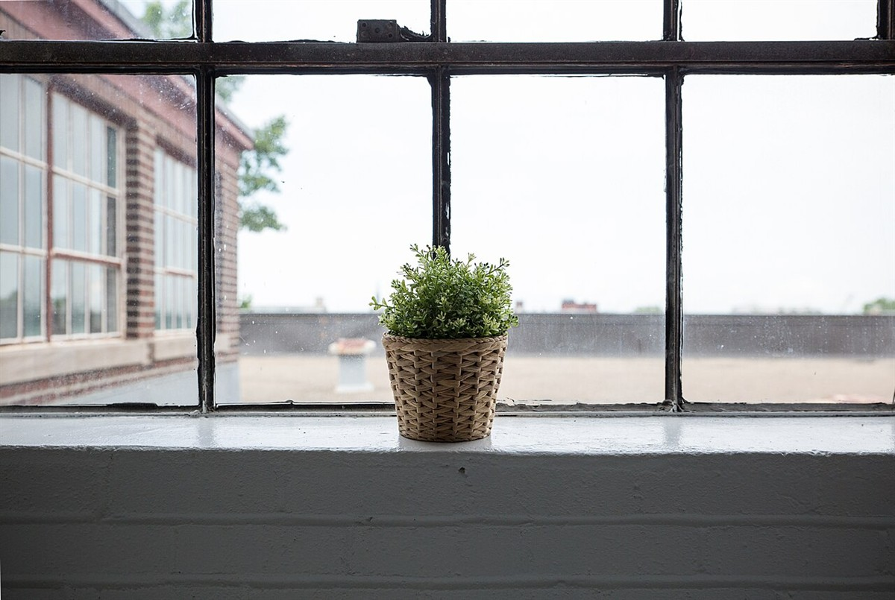
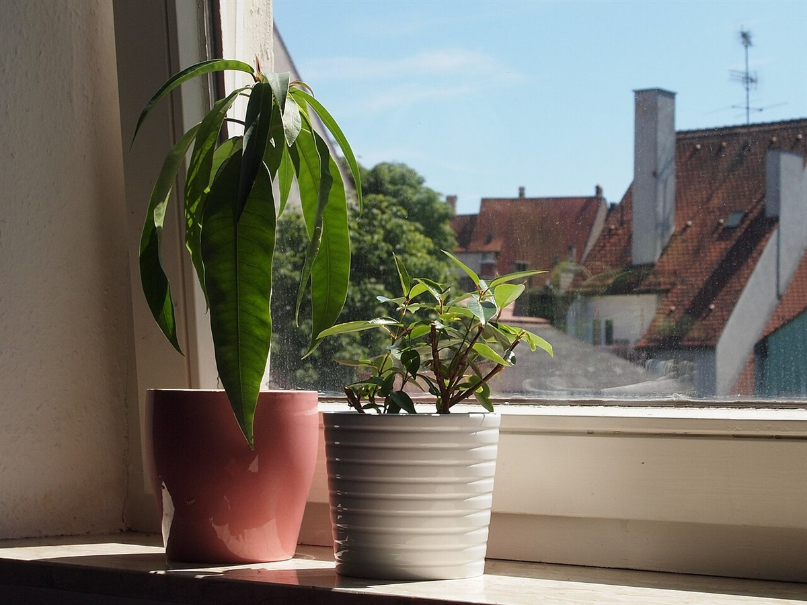

初めてでも入りやすい雰囲気でした。ふらっと立ち寄れそうな感じがうれしいです。
イメージ例|実際の声ではありません
以下は実際のお客様の声ではありません。口コミページのイメージを示すための創作例です。
初めてでも入りやすい雰囲気でした。ふらっと立ち寄れそうな感じがうれしいです。
イメージ例|実際の声ではありません
ゆっくりひと息つけました。忙しい日の合間に、また来たいと思います。
イメージ例|実際の声ではありません
近くまで来たら、また寄りたいお店です。次は友人も誘ってみます。
イメージ例|実際の声ではありません


お客様からいただいた声が集まった際には、このような形でご紹介する想定です。お店の最新の様子は、Instagramでご覧ください。